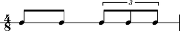

Contents duration
Abjad defines the contents duration of tuplets, measures, voices, staves and other containers equal to the sum of the preprolated duration of each of the elements in the container.
The measure here contains two eighth notes and tuplet. These elements carry preprolated durations equal to 1/8, 1/8 and 2/8, respectively.
abjad> notes = Note(0, (1, 8)) * 2 abjad> Beam(notes) abjad> tuplet = FixedDurationTuplet((2, 8), Note(0, (1, 8)) * 3) abjad> Beam(tuplet) abjad> measure = Measure((4, 8), notes + [tuplet]) abjad> staff = RhythmicStaff([measure]) abjad> measure.duration.contents Rational(4, 8) abjad> show(staff)
The contents duration of the measure here equals 1/8 + 1/8 + 2/8 = 4/8.